<title>WebBand Görsel Tur 1</title>
<link rel="preconnect" href="https://fonts.googleapis.com">
<link rel="preconnect" href="https://fonts.gstatic.com" crossorigin>
<link rel="stylesheet" href="https://fonts.googleapis.com/css2?family=Cinzel:wght@500;700&family=Inter:wght@400;500;600&family=Pixelify+Sans:wght@400;600&display=swap">
<style>
/* One deliberate look: the game's own dark-and-gold world, on either host theme. */
:root {
  color-scheme: dark;
  --bg: #0f0e0c; --bg2: #141210; --panel: #1a1714; --panel2: #221e19;
  --line: rgba(212,175,55,.24); --line2: rgba(236,230,218,.09);
  --ink: #ece6da; --muted: #a8a194; --faint: #736c61;
  --gold: #d4af37; --gold2: #f5d76e; --field: #45663b;
  --red: #e0605a; --green: #4cc38a; --amber: #e3a33b; --blue: #6fa3e8;
  --r-sm: 8px; --r-md: 12px; --r-lg: 16px;
  --display: 'Cinzel', 'Trajan Pro', Georgia, serif;
  --body: 'Inter', system-ui, -apple-system, 'Segoe UI', sans-serif;
  --pixel: 'Pixelify Sans', 'Courier New', monospace;
}
* { box-sizing: border-box; }
html { scroll-behavior: smooth; scroll-padding-top: 64px; }
body { margin: 0; background: var(--bg); color: var(--ink); font: 15px/1.6 var(--body); padding-inline: 16px; }
@media (min-width: 720px) { body { padding-inline: 28px; } }
@media (prefers-reduced-motion: reduce) { html { scroll-behavior: auto; } }
a { color: var(--gold2); }
:focus-visible { outline: 2px solid var(--gold2); outline-offset: 2px; }
.wrap { max-width: 1100px; margin: 0 auto; }
h1, h2, h3 { font-family: var(--display); font-weight: 700; letter-spacing: .02em; text-wrap: balance; margin: 0; }
h1 { font-size: clamp(2rem, 5.4vw, 3.6rem); line-height: 1.08; color: var(--gold2); }
h2 { font-size: clamp(1.45rem, 3vw, 2rem); line-height: 1.2; color: var(--gold); }
h3 { font-size: 1.08rem; color: var(--ink); }
p { margin: 0; max-width: 68ch; }
.muted { color: var(--muted); }
.eyebrow { font: 600 .74rem/1 var(--body); letter-spacing: .16em; text-transform: uppercase; color: var(--gold); }
code { font: .86em/1 ui-monospace, 'SF Mono', Menlo, monospace; background: var(--panel2); padding: .12em .4em; border-radius: 5px; color: var(--gold2); }

/* chapter nav */
.nav { position: sticky; top: env(safe-area-inset-top, 0px); z-index: 20; margin-inline: -16px; padding: 10px 16px;
  background: rgba(15,14,12,.94); border-bottom: 1px solid var(--line2); }
@media (min-width: 720px) { .nav { margin-inline: -28px; padding-inline: 28px; } }
.nav .wrap { display: flex; gap: 6px; overflow-x: auto; scrollbar-width: none; }
.nav a { flex: none; text-decoration: none; color: var(--muted); font: 500 .82rem/1 var(--body); padding: 8px 11px; border-radius: 999px; border: 1px solid transparent; }
.nav a:hover { color: var(--ink); border-color: var(--line2); }
.nav a b { color: var(--gold); font-weight: 600; margin-right: 5px; font-variant-numeric: tabular-nums; }

section { padding-block: 56px 8px; border-top: 1px solid var(--line2); }
section:first-of-type { border-top: 0; }
.sec-head { display: grid; gap: 10px; margin-bottom: 26px; }
.sec-head p { color: var(--muted); }
.stack { display: grid; gap: 18px; }
.grid2 { display: grid; gap: 18px; grid-template-columns: repeat(auto-fit, minmax(min(100%, 420px), 1fr)); }
.grid3 { display: grid; gap: 16px; grid-template-columns: repeat(auto-fit, minmax(min(100%, 300px), 1fr)); }

/* hero */
.hero { padding-block: 44px 30px; display: grid; gap: 18px; }
.hero .lead { font-size: 1.08rem; color: var(--muted); max-width: 62ch; }
.hero .lead strong { color: var(--ink); font-weight: 600; }
.march { position: relative; border-radius: var(--r-lg); overflow: hidden; border: 1px solid var(--line); background: var(--field); }
.march canvas { display: block; width: 100%; height: auto; image-rendering: pixelated; }
.march .tags { position: absolute; inset: auto 0 10px 0; display: grid; grid-template-columns: repeat(4, 1fr); text-align: center; pointer-events: none; }
.march .tags span { font: 600 .72rem/1.25 var(--body); color: #fff; text-shadow: 0 1px 2px #000, 0 0 6px #000; }
.march .tags em { display: block; font-style: normal; font-weight: 400; color: #e8e2d4; opacity: .85; }
@media (max-width: 520px) { .march .tags em { display: none; } }
.meta-row { display: flex; flex-wrap: wrap; gap: 8px; }
.pill { display: inline-flex; align-items: center; gap: 6px; font: 500 .78rem/1 var(--body); padding: 7px 10px; border-radius: 999px; background: var(--panel); border: 1px solid var(--line2); color: var(--muted); }
.pill b { color: var(--ink); font-weight: 600; }

/* diagnosis */
.thesis { display: grid; gap: 14px; padding: 22px; border-radius: var(--r-lg); background: linear-gradient(180deg, #1e1a14, #17140f); border: 1px solid var(--line); }
.thesis h3 { font-size: 1.2rem; color: var(--gold2); }
.langs { display: grid; gap: 10px; grid-template-columns: repeat(auto-fit, minmax(min(100%, 220px), 1fr)); }
.lang { padding: 12px 14px; border-radius: var(--r-md); background: rgba(0,0,0,.25); border: 1px solid var(--line2); }
.lang b { display: block; font: 600 .9rem/1.3 var(--body); color: var(--ink); margin-bottom: 3px; }
.lang span { font-size: .84rem; color: var(--muted); }
.shot { margin: 0; display: grid; gap: 10px; align-content: start; }
.shot img { width: 100%; height: auto; display: block; border-radius: var(--r-md); border: 1px solid var(--line2); }
.shot figcaption { display: grid; gap: 6px; }
.shot figcaption h3 { font-size: .98rem; }
.shot ul { margin: 0; padding-left: 18px; color: var(--muted); font-size: .9rem; display: grid; gap: 3px; }

/* verdict table */
.tbl { overflow-x: auto; border: 1px solid var(--line2); border-radius: var(--r-md); }
table { border-collapse: collapse; width: 100%; min-width: 620px; font-size: .9rem; }
th, td { text-align: left; padding: 11px 14px; border-bottom: 1px solid var(--line2); vertical-align: top; }
th { font: 600 .72rem/1 var(--body); letter-spacing: .12em; text-transform: uppercase; color: var(--faint); background: var(--bg2); }
tr:last-child td { border-bottom: 0; }
td:first-child { color: var(--ink); font-weight: 500; white-space: nowrap; }
td { color: var(--muted); }
.v { display: inline-block; font: 600 .72rem/1 var(--body); padding: 5px 8px; border-radius: 6px; white-space: nowrap; }
.v.yes { background: rgba(76,195,138,.14); color: var(--green); }
.v.part { background: rgba(227,163,59,.14); color: var(--amber); }
.v.no { background: rgba(224,96,90,.13); color: var(--red); }
.card { padding: 20px; border-radius: var(--r-lg); background: var(--panel); border: 1px solid var(--line2); display: grid; gap: 12px; align-content: start; }
.card h3 { display: flex; align-items: center; gap: 10px; flex-wrap: wrap; }
.card p { color: var(--muted); font-size: .92rem; }
.facts { display: flex; flex-wrap: wrap; gap: 6px; }
.facts span { font: 500 .78rem/1 var(--body); padding: 6px 9px; border-radius: 6px; background: var(--bg2); color: var(--muted); border: 1px solid var(--line2); font-variant-numeric: tabular-nums; }
.facts span b { color: var(--ink); font-weight: 600; }
.lineup { display: flex; align-items: flex-end; gap: 18px; flex-wrap: wrap; padding: 16px; border-radius: var(--r-md); background: var(--field); }
.lineup figure { margin: 0; display: grid; justify-items: center; gap: 6px; }
.lineup img, .lineup canvas { image-rendering: pixelated; display: block; }
.lineup figcaption { font: 500 .72rem/1.2 var(--body); color: #f1ecdf; text-align: center; text-shadow: 0 1px 2px #000; max-width: 110px; }

/* directions */
.dir { position: relative; }
.dir.pick { border-color: var(--gold); box-shadow: 0 0 0 1px var(--gold) inset; }
.dir .tag { position: absolute; top: 14px; right: 14px; }
.dir .prev { height: 150px; border-radius: var(--r-md); overflow: hidden; display: grid; place-items: center; background: var(--bg2); border: 1px solid var(--line2); }
.dir ul { margin: 0; padding-left: 18px; color: var(--muted); font-size: .88rem; display: grid; gap: 4px; }
.prevA { display: flex; gap: 12px; align-items: center; }
.prevA canvas { width: 96px; height: 96px; image-rendering: pixelated; background: var(--field); border-radius: 10px; }
.chipA { display: grid; gap: 7px; }
.chipA div { display: flex; align-items: center; gap: 8px; padding: 7px 11px; border-radius: 10px; border: 1px solid var(--line); background: #15120e; font: 600 .86rem/1 var(--body); font-variant-numeric: tabular-nums; }
.chipA svg { width: 17px; height: 17px; color: var(--gold); }
.chipA small { font: 500 .66rem/1 var(--body); color: var(--muted); letter-spacing: .08em; text-transform: uppercase; }
.pxbox { font: 600 15px/1.1 var(--pixel); color: #f6e7b6; background: #3b2a1f; padding: 12px 16px; display: grid; gap: 6px;
  box-shadow: 0 -4px 0 0 #1b120c, 0 4px 0 0 #1b120c, -4px 0 0 0 #1b120c, 4px 0 0 0 #1b120c, inset 0 4px 0 0 #6b4a32, inset 0 -4px 0 0 #24170f; }
.pxbox span { color: #f5c542; }
.prevC img { width: 100%; height: 100%; object-fit: cover; object-position: 50% 42%; }

/* workbench */
.bench { display: grid; gap: 18px; grid-template-columns: 1fr; }
@media (min-width: 900px) { .bench { grid-template-columns: minmax(0, 1.1fr) minmax(0, 1fr); } }
.stage { border-radius: var(--r-lg); overflow: hidden; border: 1px solid var(--line); background: var(--field); position: relative; }
.stage canvas { display: block; width: 100%; height: auto; image-rendering: pixelated; }
.stage .now { position: absolute; left: 12px; top: 12px; font: 600 .72rem/1.3 var(--body); color: #fff; background: rgba(0,0,0,.45); padding: 6px 9px; border-radius: 8px; }
.stage .now b { color: var(--gold2); }
.strip { display: flex; gap: 3px; overflow-x: auto; padding: 8px; background: #2f4529; }
.strip canvas { width: 48px; height: 48px; flex: none; image-rendering: pixelated; border-radius: 6px; background: rgba(0,0,0,.12); outline: 1px solid transparent; }
.strip canvas.on { outline-color: var(--gold2); background: rgba(0,0,0,.28); }
.ctrls { display: grid; gap: 14px; align-content: start; }
.ctl { display: grid; gap: 7px; }
.ctl > label, .ctl > .lbl { font: 600 .72rem/1 var(--body); letter-spacing: .12em; text-transform: uppercase; color: var(--faint); }
.seg { display: flex; flex-wrap: wrap; gap: 6px; }
.seg button { font: 500 .84rem/1 var(--body); color: var(--muted); background: var(--panel); border: 1px solid var(--line2); padding: 9px 11px; border-radius: 9px; cursor: pointer; display: inline-flex; align-items: center; gap: 7px; }
.seg button:hover { color: var(--ink); border-color: rgba(236,230,218,.2); }
.seg button[aria-pressed="true"] { color: #17130c; background: var(--gold); border-color: var(--gold); font-weight: 600; }
.seg button small { font-size: .7rem; opacity: .75; }
.sw { width: 12px; height: 12px; border-radius: 3px; display: inline-block; border: 1px solid rgba(0,0,0,.4); }
.presets { display: flex; flex-wrap: wrap; gap: 8px; }
.presets button { font: 600 .82rem/1.2 var(--body); color: var(--ink); background: linear-gradient(180deg, #2a241b, #1d1914); border: 1px solid var(--line); padding: 10px 12px; border-radius: 10px; cursor: pointer; text-align: left; }
.presets button small { display: block; font-weight: 400; color: var(--muted); font-size: .74rem; margin-top: 2px; }
.presets button:hover { border-color: var(--gold); }
.rule { padding: 14px 16px; border-radius: var(--r-md); background: rgba(212,175,55,.07); border: 1px solid var(--line); font-size: .9rem; color: var(--muted); display: grid; gap: 6px; }
.rule b { color: var(--ink); }
.compare { display: flex; gap: 14px; align-items: center; padding: 12px 14px; border-radius: var(--r-md); background: var(--panel); border: 1px solid var(--line2); }
.compare canvas { width: 80px; height: 80px; image-rendering: pixelated; background: var(--field); border-radius: 8px; flex: none; }
.compare p { font-size: .86rem; color: var(--muted); }

/* battle */
.arena { border-radius: var(--r-lg); overflow: hidden; border: 1px solid var(--line); background: var(--field); }
.arena canvas { display: block; width: 100%; height: auto; image-rendering: pixelated; cursor: pointer; }
.arena-bar { display: flex; flex-wrap: wrap; gap: 10px 18px; align-items: center; justify-content: space-between; padding: 12px 14px; background: var(--panel); border-top: 1px solid var(--line2); }
.toggles { display: flex; flex-wrap: wrap; gap: 6px; }
.toggles label { display: inline-flex; align-items: center; gap: 7px; font: 500 .82rem/1 var(--body); color: var(--muted); padding: 8px 10px; border-radius: 9px; border: 1px solid var(--line2); background: var(--bg2); cursor: pointer; user-select: none; }
.toggles input { accent-color: var(--gold); margin: 0; }
.toggles label:has(input:checked) { color: var(--ink); border-color: var(--line); }
.notes { display: grid; gap: 10px; grid-template-columns: repeat(auto-fit, minmax(min(100%, 250px), 1fr)); }
.note { padding: 14px 16px; border-radius: var(--r-md); background: var(--panel); border: 1px solid var(--line2); font-size: .88rem; color: var(--muted); }
.note b { display: block; color: var(--ink); font-weight: 600; margin-bottom: 4px; }

/* ui mocks */
.mock-pair { display: grid; gap: 14px; }
.mock-label { display: flex; align-items: center; gap: 10px; font: 600 .72rem/1 var(--body); letter-spacing: .12em; text-transform: uppercase; color: var(--faint); }
.mock-label::after { content: ''; flex: 1; height: 1px; background: var(--line2); }
.mock-label.new { color: var(--gold); }
.crop { border-radius: var(--r-md); overflow: hidden; border: 1px solid var(--line2); }
.crop img { display: block; width: 100%; height: auto; }
.crop.hud { aspect-ratio: 1366 / 56; }
.crop.hud img { width: 100%; }
.crop.town { aspect-ratio: 1100 / 640; position: relative; }
.crop.town img { position: absolute; width: 124.2%; max-width: none; left: -21.3%; top: -13.6%; }
.crop.create { aspect-ratio: 700 / 440; position: relative; }
.crop.create img { position: absolute; width: 195%; max-width: none; left: -48%; top: -38%; }

/* game-surface tokens for the mocks (the proposal itself) */
.g { --g-bg: #0d0c0b; --g-panel: #15130f; --g-chip: #1b1813; --g-line: rgba(212,175,55,.28); --g-ink: #efe9dd; --g-mut: #9e9789; font-family: var(--body); color: var(--g-ink); }
.g svg.i { width: 18px; height: 18px; flex: none; color: var(--gold); stroke: currentColor; fill: none; stroke-width: 1.6; stroke-linecap: round; stroke-linejoin: round; }

.hudm { background: linear-gradient(180deg, #1a1712, #110f0c); border: 1px solid var(--g-line); border-radius: var(--r-md); padding: 8px; display: flex; flex-wrap: wrap; gap: 8px; }
.hgrp { display: flex; gap: 2px; padding: 3px; border-radius: 11px; background: rgba(0,0,0,.35); border: 1px solid rgba(236,230,218,.06); }
.hgrp .t { writing-mode: vertical-rl; transform: rotate(180deg); font: 600 .56rem/1 var(--body); letter-spacing: .16em; text-transform: uppercase; color: #6e675c; padding: 4px 2px; }
.hc { display: flex; align-items: center; gap: 8px; padding: 6px 10px 6px 8px; border-radius: 8px; min-width: 0; position: relative; }
.hc:hover { background: rgba(212,175,55,.08); }
.hc .n { font: 600 .98rem/1 var(--body); font-variant-numeric: tabular-nums; }
.hc .n small { font-weight: 500; color: var(--g-mut); font-size: .76rem; }
.hc .k { font: 500 .64rem/1 var(--body); color: var(--g-mut); letter-spacing: .08em; text-transform: uppercase; margin-top: 4px; }
.hc .bar { height: 3px; border-radius: 2px; background: rgba(255,255,255,.08); margin-top: 5px; overflow: hidden; }
.hc .bar i { display: block; height: 100%; border-radius: 2px; }
.hc.warn { background: rgba(224,96,90,.1); }
.hc.warn svg.i { color: var(--red); }
.hc.warn .n { color: #ff9a92; }
.hc.warn .k { color: #d88882; }
.hc.warn::after { content: ''; position: absolute; top: 6px; right: 6px; width: 6px; height: 6px; border-radius: 50%; background: var(--red); box-shadow: 0 0 0 0 rgba(224,96,90,.6); animation: ping 1.8s infinite; }
@keyframes ping { 70% { box-shadow: 0 0 0 7px rgba(224,96,90,0); } 100% { box-shadow: 0 0 0 0 rgba(224,96,90,0); } }
@media (prefers-reduced-motion: reduce) { .hc.warn::after { animation: none; } }
.daydial { width: 30px; height: 30px; flex: none; }

.townm { background: var(--g-bg); border: 1px solid var(--g-line); border-radius: var(--r-lg); overflow: hidden; }
.townm .scene { position: relative; aspect-ratio: 1080 / 335; overflow: hidden; }
.townm .scene img { position: absolute; width: 126.5%; max-width: none; left: -22.7%; top: -46.3%; }
.townm .scene::after { content: ''; position: absolute; inset: 0; background: linear-gradient(180deg, rgba(13,12,11,0) 45%, rgba(13,12,11,.95)); }
.townm .title { position: absolute; left: 20px; bottom: 14px; z-index: 1; display: grid; gap: 4px; }
.townm .title h3 { font-family: var(--display); font-size: 1.7rem; color: var(--gold2); text-shadow: 0 2px 10px #000; }
.townm .title div { display: flex; gap: 6px; flex-wrap: wrap; }
.townm .title span { font: 500 .74rem/1 var(--body); padding: 5px 8px; border-radius: 6px; background: rgba(0,0,0,.55); color: #d8d1c3; border: 1px solid rgba(255,255,255,.08); }
.townm .title span i { display: inline-block; width: 8px; height: 8px; border-radius: 50%; background: #ff4d4d; margin-right: 5px; vertical-align: 0; }
.tgroups { padding: 6px 18px 20px; display: grid; gap: 16px; }
.tg h4 { margin: 0 0 8px; font: 600 .68rem/1 var(--body); letter-spacing: .16em; text-transform: uppercase; color: #7a7266; }
.tcards { display: grid; gap: 8px; grid-template-columns: repeat(auto-fill, minmax(min(100%, 230px), 1fr)); }
.tcard { display: grid; grid-template-columns: 38px 1fr auto; gap: 12px; align-items: center; text-align: left; padding: 11px 12px; border-radius: 12px; background: var(--g-chip); border: 1px solid rgba(236,230,218,.07); color: var(--g-ink); cursor: pointer; font: inherit; }
.tcard:hover { border-color: var(--g-line); background: #211d16; }
.tcard .ic { width: 38px; height: 38px; border-radius: 10px; display: grid; place-items: center; background: radial-gradient(circle at 35% 30%, #3a3020, #1a1610); border: 1px solid rgba(212,175,55,.25); }
.tcard .ic svg.i { width: 20px; height: 20px; }
.tcard b { display: block; font: 600 .92rem/1.2 var(--body); }
.tcard span { display: block; font-size: .76rem; color: var(--g-mut); margin-top: 2px; line-height: 1.35; }
.tcard .mt { font: 600 .72rem/1 var(--body); color: var(--gold); white-space: nowrap; font-variant-numeric: tabular-nums; }
.tcard kbd { font: 600 .66rem/1 var(--body); color: #8f887b; border: 1px solid #3a342b; border-bottom-width: 2px; padding: 3px 5px; border-radius: 4px; }
.tcard.lock { opacity: .55; }
.tcard.lock .mt { color: var(--red); }

.createm { background: var(--g-panel); border: 1px solid var(--g-line); border-radius: var(--r-lg); padding: 20px; display: grid; gap: 14px; max-width: 640px; }
.steps { display: grid; grid-template-columns: repeat(7, 1fr); gap: 4px; }
.steps i { height: 4px; border-radius: 2px; background: rgba(236,230,218,.1); }
.steps i.on { background: var(--gold); }
.steps i.cur { background: var(--gold2); box-shadow: 0 0 8px rgba(245,215,110,.6); }
.createm .hd { display: flex; justify-content: space-between; align-items: baseline; gap: 10px; flex-wrap: wrap; }
.createm .hd h3 { font-family: var(--display); font-size: 1.4rem; color: var(--gold2); }
.createm .hd span { font: 500 .76rem/1 var(--body); color: var(--g-mut); font-variant-numeric: tabular-nums; }
.createm .hint { font-size: .9rem; color: var(--g-mut); }
.opt { display: grid; grid-template-columns: 58px 1fr; gap: 14px; align-items: center; padding: 12px; border-radius: 12px; background: var(--g-chip); border: 1px solid rgba(236,230,218,.08); cursor: pointer; text-align: left; color: inherit; font: inherit; }
.opt:hover, .opt.sel { border-color: var(--gold); }
.opt canvas { width: 58px; height: 58px; image-rendering: pixelated; border-radius: 10px; background: #2d4027; }
.opt b { font: 600 1rem/1.2 var(--body); display: block; }
.opt p { font-size: .86rem; color: var(--g-mut); margin: 3px 0 7px; line-height: 1.45; }
.fx { display: flex; gap: 6px; flex-wrap: wrap; }
.fx span { font: 600 .7rem/1 var(--body); padding: 5px 7px; border-radius: 6px; background: rgba(236,230,218,.07); color: #bdb5a6; }
.fx span.neg { background: rgba(224,96,90,.12); color: #f08f88; }
.fx span.pos { background: rgba(76,195,138,.12); color: #7fdcae; }

/* roadmap */
.road { display: grid; gap: 12px; grid-template-columns: repeat(auto-fit, minmax(min(100%, 240px), 1fr)); counter-reset: r; }
.stop { padding: 18px; border-radius: var(--r-lg); background: var(--panel); border: 1px solid var(--line2); display: grid; gap: 8px; align-content: start; }
.stop.cur { border-color: var(--gold); background: linear-gradient(180deg, #221d14, var(--panel)); }
.stop .eyebrow { color: var(--faint); }
.stop.cur .eyebrow { color: var(--gold); }
.stop h3 { font-size: 1.02rem; }
.stop ul { margin: 0; padding-left: 18px; font-size: .86rem; color: var(--muted); display: grid; gap: 3px; }

/* decisions */
.form { display: grid; gap: 14px; }
.q { padding: 18px; border-radius: var(--r-lg); background: var(--panel); border: 1px solid var(--line2); display: grid; gap: 10px; }
.q legend { padding: 0; font: 600 .98rem/1.35 var(--body); color: var(--ink); }
.q .why { font-size: .84rem; color: var(--muted); margin-top: -4px; }
fieldset { border: 0; margin: 0; padding: 0; min-width: 0; }
.opts { display: flex; flex-wrap: wrap; gap: 8px; margin-top: 10px; }
.opts label { display: inline-flex; align-items: center; gap: 8px; padding: 10px 12px; border-radius: 10px; border: 1px solid var(--line2); background: var(--bg2); cursor: pointer; font-size: .88rem; color: var(--muted); }
.opts label:has(input:checked) { border-color: var(--gold); color: var(--ink); background: rgba(212,175,55,.09); }
.opts input { accent-color: var(--gold); margin: 0; }
.opts label em { font-style: normal; font: 600 .66rem/1 var(--body); color: var(--gold); letter-spacing: .06em; text-transform: uppercase; }
textarea { width: 100%; min-height: 110px; resize: vertical; font: 400 .92rem/1.5 var(--body); color: var(--ink); background: var(--bg2); border: 1px solid var(--line2); border-radius: 10px; padding: 12px; }
.save { display: flex; align-items: center; gap: 14px; flex-wrap: wrap; }
.btn { font: 600 .92rem/1 var(--body); color: #17130c; background: var(--gold); border: 0; padding: 13px 20px; border-radius: 10px; cursor: pointer; }
.btn:hover { background: var(--gold2); }
.btn:disabled { opacity: .5; cursor: default; }
#saveState { font-size: .86rem; color: var(--muted); }
/* phone mocks: the screen scales with its own width (container units), like a real device */
.phones { display: grid; gap: 30px 22px; grid-template-columns: repeat(auto-fit, minmax(min(100%, 290px), 1fr)); align-items: start; }
.pcol { display: grid; gap: 12px; justify-items: center; align-content: start; }
.pcol h3 { justify-self: stretch; }
.pcol .seg { justify-self: center; }
.pcol ul { justify-self: stretch; margin: 0; padding-left: 18px; color: var(--muted); font-size: .86rem; display: grid; gap: 4px; }
.phone { width: min(100%, 300px); aspect-ratio: 412 / 860; border-radius: 36px; padding: 9px; background: #050505; border: 1px solid #2c2824; box-shadow: 0 24px 50px rgba(0,0,0,.55), inset 0 0 0 2px #151311; }
.scr { position: relative; width: 100%; height: 100%; border-radius: 28px; overflow: hidden; background: #0d0c0b; container-type: inline-size; font-family: var(--body); color: #efe9dd; }
.scr > .view { position: absolute; inset: 0; }
.scr > .view[hidden] { display: none; }
.scr .shot-full { width: 100%; height: 100%; object-fit: cover; object-position: top; display: block; }
.scr svg.i { width: 5.6cqw; height: 5.6cqw; flex: none; color: var(--gold); stroke: currentColor; fill: none; stroke-width: 1.7; stroke-linecap: round; stroke-linejoin: round; }
.scr canvas { position: absolute; inset: 0; width: 100%; height: 100%; image-rendering: pixelated; }
/* compact HUD row */
.ph-hud { position: absolute; left: 0; right: 0; top: 0; z-index: 3; display: flex; gap: 1.4cqw; align-items: center; padding: 2.6cqw 2.6cqw 2.2cqw; background: linear-gradient(180deg, rgba(13,12,11,.97), rgba(13,12,11,.88)); border-bottom: 1px solid rgba(212,175,55,.22); }
.ph-hud .c { display: flex; align-items: center; gap: 1.2cqw; padding: 1.3cqw 2cqw; border-radius: 2.6cqw; background: rgba(255,255,255,.04); font: 600 3.5cqw/1 var(--body); font-variant-numeric: tabular-nums; white-space: nowrap; }
.ph-hud .c small { font-weight: 500; color: #9e9789; font-size: 2.7cqw; }
.ph-hud .c.warn { background: rgba(224,96,90,.14); color: #ff9a92; }
.ph-hud .c.warn svg.i { color: var(--red); }
.ph-hud .more { margin-left: auto; width: 7.5cqw; height: 7.5cqw; border-radius: 50%; display: grid; place-items: center; background: rgba(255,255,255,.05); color: #bdb5a6; font-size: 3.4cqw; }
/* bottom nav */
.ph-nav { position: absolute; left: 0; right: 0; bottom: 0; z-index: 3; display: grid; grid-template-columns: repeat(5, 1fr); padding: 1.8cqw 2cqw 3.4cqw; background: rgba(13,12,11,.97); border-top: 1px solid rgba(212,175,55,.2); }
.ph-nav span { display: grid; justify-items: center; gap: 1cqw; font: 500 2.6cqw/1 var(--body); color: #8e877a; padding: 1.4cqw 0; border-radius: 3cqw; }
.ph-nav span svg.i { color: #8e877a; width: 6cqw; height: 6cqw; }
.ph-nav span.on { color: var(--gold2); background: rgba(212,175,55,.1); }
.ph-nav span.on svg.i { color: var(--gold2); }
/* battle */
.pb-top { position: absolute; left: 0; right: 0; top: 0; z-index: 2; padding: 3cqw 3cqw 0; display: grid; gap: 2cqw; }
.pb-row { display: flex; align-items: center; gap: 2.4cqw; }
.pb-menu { width: 9cqw; height: 9cqw; flex: none; border-radius: 50%; display: grid; place-items: center; background: rgba(0,0,0,.5); border: 1px solid rgba(255,255,255,.12); color: #e8e2d4; font: 700 4cqw/1 var(--body); }
.pb-tug { flex: 1; height: 6.4cqw; border-radius: 99px; overflow: hidden; display: flex; background: rgba(0,0,0,.5); border: 1px solid rgba(255,255,255,.14); font: 700 3cqw/6.4cqw var(--body); font-variant-numeric: tabular-nums; position: relative; }
.pb-tug i { display: block; height: 100%; transition: width .3s; }
.pb-tug .us { background: linear-gradient(90deg, #2d6fb8, #3f8ee0); }
.pb-tug .them { background: linear-gradient(90deg, #d04545, #a62f2f); flex: 1; }
.pb-tug b { position: absolute; top: 0; padding: 0 2.6cqw; text-shadow: 0 1px 2px #000; }
.pb-tug b:last-child { right: 0; }
.pb-mini { width: 14cqw; height: 14cqw; flex: none; border-radius: 2.4cqw; background: rgba(0,0,0,.45); border: 1px solid rgba(255,255,255,.14); position: relative; overflow: hidden; }
.pb-mini i { position: absolute; width: 1.4cqw; height: 1.4cqw; border-radius: 50%; }
.pb-toast { justify-self: start; max-width: 78%; padding: 2cqw 3cqw; border-radius: 3cqw; background: rgba(0,0,0,.6); font: 400 3cqw/1.35 var(--body); color: #e8e2d4; border-left: 2px solid var(--red); animation: toast 7s infinite; }
.pb-toast b { color: #ff9a92; font-weight: 600; }
@keyframes toast { 0%, 4% { opacity: 0; transform: translateY(-2cqw); } 8%, 55% { opacity: 1; transform: none; } 62%, 100% { opacity: 0; } }
@media (prefers-reduced-motion: reduce) { .pb-toast { animation: none; } }
.pb-ctl { position: absolute; left: 0; right: 0; bottom: 0; z-index: 2; height: 38%; pointer-events: none; }
.pb-stick { position: absolute; left: 5cqw; bottom: 7cqw; width: 27cqw; height: 27cqw; border-radius: 50%; border: 1.5px solid rgba(212,175,55,.35); background: radial-gradient(circle, rgba(212,175,55,.08), rgba(0,0,0,.15)); }
.pb-stick::after { content: ''; position: absolute; left: 50%; top: 50%; width: 11cqw; height: 11cqw; margin: -5.5cqw; border-radius: 50%; background: radial-gradient(circle at 35% 30%, rgba(245,215,110,.75), rgba(160,120,40,.6)); }
.pb-cmds { position: absolute; left: 4cqw; bottom: 38cqw; display: flex; gap: 1.4cqw; }
.pb-cmds span { font: 600 2.7cqw/1 var(--body); padding: 1.8cqw 2.4cqw; border-radius: 99px; background: rgba(0,0,0,.55); border: 1px solid rgba(255,255,255,.12); color: #d9d2c4; }
.pb-cmds span.on { border-color: var(--gold); color: var(--gold2); }
.pb-atk { position: absolute; right: 5cqw; bottom: 8cqw; width: 22cqw; height: 22cqw; border-radius: 50%; display: grid; place-items: center; background: radial-gradient(circle at 35% 30%, rgba(224,96,90,.55), rgba(120,30,30,.55)); border: 1.5px solid rgba(255,160,150,.5); }
.pb-atk svg.i, .pb-blk svg.i { width: 10cqw; height: 10cqw; color: #fff; }
.pb-blk { position: absolute; right: 28cqw; bottom: 5cqw; width: 14cqw; height: 14cqw; border-radius: 50%; display: grid; place-items: center; background: rgba(0,0,0,.45); border: 1.5px solid rgba(212,175,55,.4); }
.pb-blk svg.i { width: 7cqw; height: 7cqw; color: #e8e2d4; }
.pb-hp { position: absolute; left: 3cqw; top: 33cqw; z-index: 2; display: flex; align-items: center; gap: 2cqw; padding: 1.4cqw 2.4cqw 1.4cqw 1.4cqw; border-radius: 99px; background: rgba(0,0,0,.5); font: 600 2.8cqw/1 var(--body); }
.pb-hp i { display: block; width: 18cqw; height: 1.6cqw; border-radius: 2px; background: rgba(255,255,255,.12); overflow: hidden; }
.pb-hp i::after { content: ''; display: block; width: 72%; height: 100%; background: var(--green); }
/* town */
.pt-body { position: absolute; left: 0; right: 0; top: 13.5cqw; bottom: 19cqw; overflow: hidden; }
.pt-scene { position: relative; height: 38cqw; overflow: hidden; }
.pt-scene img { position: absolute; width: 126.5%; max-width: none; left: -22.7%; top: -12.5cqw; }
.pt-scene::after { content: ''; position: absolute; inset: 0; background: linear-gradient(180deg, rgba(13,12,11,0) 40%, rgba(13,12,11,.96)); }
.pt-scene div { position: absolute; left: 3.4cqw; bottom: 2.4cqw; z-index: 1; }
.pt-scene h4 { margin: 0; font: 700 6.4cqw/1 var(--display); color: var(--gold2); text-shadow: 0 2px 8px #000; }
.pt-scene p { font: 500 2.8cqw/1.3 var(--body); color: #cfc8ba; margin-top: 1.2cqw; }
.pt-scene p i { display: inline-block; width: 1.8cqw; height: 1.8cqw; border-radius: 50%; background: #ff4d4d; margin-right: 1cqw; }
.pt-grp { padding: 2.6cqw 3.4cqw 0; }
.pt-grp h5 { margin: 0 0 1.8cqw; font: 600 2.4cqw/1 var(--body); letter-spacing: .16em; text-transform: uppercase; color: #7a7266; }
.pt-tiles { display: grid; grid-template-columns: 1fr 1fr; gap: 2cqw; }
.pt-tile { display: grid; grid-template-columns: auto 1fr; gap: 2.2cqw; align-items: center; padding: 2.6cqw; border-radius: 3.2cqw; background: #1b1813; border: 1px solid rgba(236,230,218,.07); min-height: 14cqw; }
.pt-tile .ic { width: 9cqw; height: 9cqw; border-radius: 2.6cqw; display: grid; place-items: center; background: radial-gradient(circle at 35% 30%, #3a3020, #1a1610); border: 1px solid rgba(212,175,55,.25); }
.pt-tile b { display: block; font: 600 3.3cqw/1.15 var(--body); }
.pt-tile span { display: block; font: 400 2.5cqw/1.25 var(--body); color: #9e9789; margin-top: .6cqw; }
.pt-tile.lock { opacity: .55; }
.pt-tile.lock span { color: #f08f88; }
.pt-leave { margin: 2.6cqw 3.4cqw 0; padding: 2.8cqw; border-radius: 3cqw; border: 1px solid rgba(212,175,55,.28); text-align: center; font: 600 3.2cqw/1 var(--body); color: var(--gold2); }
/* map */
.pm-labels span { position: absolute; transform: translate(-50%, -100%); z-index: 1; white-space: nowrap; font: 600 2.8cqw/1 var(--body); padding: 1.2cqw 1.8cqw; border-radius: 99px; background: rgba(10,9,8,.78); color: #efe9dd; border: 1px solid rgba(255,255,255,.1); display: inline-flex; align-items: center; gap: 1.2cqw; }
.pm-labels span i { width: 1.8cqw; height: 1.8cqw; border-radius: 50%; display: inline-block; }
.pm-labels span.you { color: var(--gold2); border-color: rgba(245,215,110,.5); }
.pm-labels span.foe { border-color: rgba(224,96,90,.6); color: #ffb0a9; }
.pm-labels span.small { font-size: 2.4cqw; padding: .9cqw 1.5cqw; }
.pm-bar { position: absolute; left: 3cqw; right: 3cqw; bottom: 21cqw; z-index: 3; display: flex; align-items: center; gap: 2cqw; padding: 2cqw 2cqw 2cqw 3cqw; border-radius: 99px; background: rgba(13,12,11,.9); border: 1px solid rgba(212,175,55,.25); }
.pm-bar .t { font: 600 3cqw/1.2 var(--body); }
.pm-bar .t small { display: block; font-weight: 500; font-size: 2.4cqw; color: var(--gold); }
.pm-bar .b { margin-left: auto; display: flex; gap: 1.6cqw; }
.pm-bar .b span { width: 10cqw; height: 10cqw; border-radius: 50%; display: grid; place-items: center; background: rgba(255,255,255,.05); border: 1px solid rgba(255,255,255,.08); font: 700 2.8cqw/1 var(--body); color: #e8e2d4; }
footer { padding-block: 40px 60px; color: var(--faint); font-size: .82rem; border-top: 1px solid var(--line2); margin-top: 56px; }
</style>

<svg width="0" height="0" style="position:absolute" aria-hidden="true">
  <defs>
    <symbol id="i-sun" viewBox="0 0 24 24"><path d="M3 18h18"/><path d="M7 18a5 5 0 0 1 10 0"/><path d="M12 8v2M5.6 10.6 7 12M18.4 10.6 17 12M3 14.5h2M19 14.5h2"/></symbol>
    <symbol id="i-coin" viewBox="0 0 24 24"><ellipse cx="12" cy="6.5" rx="7" ry="3"/><path d="M5 6.5v5c0 1.7 3.1 3 7 3s7-1.3 7-3v-5"/><path d="M5 11.5v5c0 1.7 3.1 3 7 3s7-1.3 7-3v-5"/></symbol>
    <symbol id="i-bread" viewBox="0 0 24 24"><path d="M4 13.5C4 9.4 7.6 6.5 12 6.5s8 2.9 8 7v3.5a1 1 0 0 1-1 1H5a1 1 0 0 1-1-1z"/><path d="M9 10l-1 3M13 9.5l-1 3.5M17 10.5l-1 2.5"/></symbol>
    <symbol id="i-star" viewBox="0 0 24 24"><path d="M12 3.5l2.6 5.3 5.9.9-4.3 4.1 1 5.8L12 16.9l-5.2 2.7 1-5.8-4.3-4.1 5.9-.9z"/></symbol>
    <symbol id="i-heart" viewBox="0 0 24 24"><path d="M12 20s-7-4.4-7-10a4 4 0 0 1 7-2.6A4 4 0 0 1 19 10c0 5.6-7 10-7 10z"/></symbol>
    <symbol id="i-men" viewBox="0 0 24 24"><circle cx="9" cy="8" r="3"/><path d="M3.5 19a5.5 5.5 0 0 1 11 0"/><path d="M15 5.4a3 3 0 0 1 0 5.2M17 13.6a5.5 5.5 0 0 1 3.5 5.4"/></symbol>
    <symbol id="i-sack" viewBox="0 0 24 24"><path d="M9 3.5h6l-1.5 3h-3z"/><path d="M10.5 6.5C6 8.6 4.4 12.8 5 16.3 5.4 18.9 7.5 20 12 20s6.6-1.1 7-3.7c.6-3.5-1-7.7-5.5-9.8"/></symbol>
    <symbol id="i-horn" viewBox="0 0 24 24"><path d="M3.5 10v4l3 .6c4.2.8 8.2 2.6 11.5 5.4V4C14.7 6.8 10.7 8.6 6.5 9.4z"/><path d="M6.8 14.8 8 19.5"/><path d="M20.5 10v4"/></symbol>
    <symbol id="i-up" viewBox="0 0 24 24"><path d="M6 13.5l6-5 6 5M6 19l6-5 6 5"/><path d="M12 3.5v2"/></symbol>
    <symbol id="i-boot" viewBox="0 0 24 24"><path d="M8 3.5h5v7.5l5.6 2.7A2.5 2.5 0 0 1 20 16v2.5H4.5V15l2-1z"/><path d="M4.5 18.5H20M8 7h5"/></symbol>
    <symbol id="i-stall" viewBox="0 0 24 24"><path d="M3 9l2-5h14l2 5"/><path d="M3 9a3 3 0 0 0 6 0 3 3 0 0 0 6 0 3 3 0 0 0 6 0"/><path d="M5 12v8h14v-8M10 20v-5h4v5"/></symbol>
    <symbol id="i-anvil" viewBox="0 0 24 24"><path d="M3.5 7.5H17a4.5 4.5 0 0 1-4.5 4.5H9"/><path d="M9 12v3H7l-1.5 5h13L17 15h-2v-3"/><path d="M3.5 7.5c0 2 1.5 3 3.5 3"/></symbol>
    <symbol id="i-mug" viewBox="0 0 24 24"><path d="M5.5 8.5h9.5v11a1 1 0 0 1-1 1H6.5a1 1 0 0 1-1-1z"/><path d="M15 10.5h2a2 2 0 0 1 2 2v3a2 2 0 0 1-2 2h-2"/><path d="M5.5 8.5c0-2 1.4-3 2.8-3 .9-1.3 3.4-1.3 4.2 0 1.5 0 2.5 1 2.5 3"/><path d="M9 12v5M12 12v5"/></symbol>
    <symbol id="i-chain" viewBox="0 0 24 24"><rect x="2.5" y="9" width="9" height="6" rx="3"/><rect x="12.5" y="9" width="9" height="6" rx="3"/><path d="M9 12h6"/></symbol>
    <symbol id="i-swords" viewBox="0 0 24 24"><path d="M4 4l10.5 10.5M20 4 9.5 14.5"/><path d="M13 16l3 3M11 16l-3 3M5 20l2-2M19 20l-2-2"/></symbol>
    <symbol id="i-crown" viewBox="0 0 24 24"><path d="M4 17 3 8l5 4 4-6.5L16 12l5-4-1 9z"/><path d="M4 20.5h16"/></symbol>
    <symbol id="i-glass" viewBox="0 0 24 24"><path d="M7 3h10M7 21h10"/><path d="M8 3c0 5 8 5 8 9s-8 4-8 9M16 3c0 5-8 5-8 9s8 4 8 9"/></symbol>
    <symbol id="i-door" viewBox="0 0 24 24"><path d="M6 21V4.5a1 1 0 0 1 1-1h8.5l2.5 2V21"/><path d="M3.5 21h17"/><path d="M14 12.5v1.5"/></symbol>
    <symbol id="i-helm" viewBox="0 0 24 24"><path d="M5 15a7 7 0 0 1 14 0v2H5z"/><path d="M12 8v9M3.5 17h17"/></symbol>
    <symbol id="i-map" viewBox="0 0 24 24"><path d="M3.5 6.5l5-2 7 2.5 5-2v13l-5 2-7-2.5-5 2z"/><path d="M8.5 4.5v13M15.5 7v13"/></symbol>
    <symbol id="i-shield" viewBox="0 0 24 24"><path d="M12 3.5l7 2.5v5.5c0 4.5-3 7.7-7 9-4-1.3-7-4.5-7-9V6z"/></symbol>
    <symbol id="i-dots" viewBox="0 0 24 24"><path d="M6 12h.01M12 12h.01M18 12h.01" stroke-width="3"/></symbol>
    <symbol id="i-target" viewBox="0 0 24 24"><circle cx="12" cy="12" r="7.5"/><circle cx="12" cy="12" r="3"/><path d="M12 2.5v3M12 18.5v3M2.5 12h3M18.5 12h3"/></symbol>
    <symbol id="i-globe" viewBox="0 0 24 24"><circle cx="12" cy="12" r="8.5"/><path d="M3.5 12h17M12 3.5c2.5 2.6 3.5 5.4 3.5 8.5S14.5 17.9 12 20.5C9.5 17.9 8.5 15.1 8.5 12S9.5 6.1 12 3.5z"/></symbol>
    <symbol id="i-sword" viewBox="0 0 24 24"><path d="M19.5 4.5l-9 9M19.5 4.5h-3.5M19.5 4.5V8"/><path d="M8 11l5 5M9.5 14.5 5 19M4 18l2 2"/></symbol>
  </defs>
</svg>

<nav class="nav" aria-label="Bölümler"><div class="wrap">
  <a href="#ozet"><b>0</b>Özet</a>
  <a href="#teshis"><b>1</b>Teşhis</a>
  <a href="#paketler"><b>2</b>Paketler</a>
  <a href="#yon"><b>3</b>Sanat yönü</a>
  <a href="#oyuncu"><b>4</b>Oyuncu PoC</a>
  <a href="#savas"><b>5</b>Savaş PoC</a>
  <a href="#arayuz"><b>6</b>Arayüz</a>
  <a href="#telefon"><b>7</b>Telefonda</a>
  <a href="#yol"><b>8</b>Yol haritası</a>
  <a href="#karar"><b>9</b>Kararların</a>
</div></nav>

<main class="wrap">

<header class="hero" id="ozet">
  <span class="eyebrow">WebBand · Görsel yenileme · Tur 1</span>
  <h1>Paçavradan zırha</h1>
  <p class="lead">Bu sayfa ilk tur. Burada <strong>oyunun şu anki hâlinin teşhisi</strong>, gönderdiğin <strong>iki CraftPix paketinin değerlendirmesi</strong>, <strong>iki çalışan PoC</strong> ve <strong>üç arayüz mock'u</strong> var. Sonunda da senden istediğim kararlar. Oyuna henüz hiçbir şey girmedi. Bu sayfanın kaynağı <code>claude/eloquent-allen-pmozyf</code> branch'inde, main'e dokunulmadı.</p>
  <div class="march" aria-label="Aynı karakterin dört ekipman aşaması, yürürken">
    <canvas id="hero" width="320" height="64"></canvas>
    <div class="tags">
      <span>Köylü<em>paçavra · sopa</em></span>
      <span>Milis<em>deri zırh · deri başlık</em></span>
      <span>Er<em>zincir · burunluklu miğfer</em></span>
      <span>Kıdemli<em>zincir · büyük miğfer · çelik</em></span>
    </div>
  </div>
  <div class="meta-row">
    <span class="pill">Yukarıdaki dördü <b>aynı sprite</b>, farklı katmanlar</span>
    <span class="pill">Miğferler <b>elle, piksel piksel</b> çizildi</span>
    <span class="pill">Renkler <b>Nord</b> sancağı</span>
  </div>
</header>

<section id="teshis">
  <div class="sec-head">
    <span class="eyebrow">1 · Teşhis</span>
    <h2>Şu an ekranda ne var?</h2>
    <p>Bu görüntüleri bu oturumda, oyunun bugünkü hâlinden aldım (1366×768 masaüstü). Tek tek ekranlardaki sorunlardan önce, hepsini birden etkileyen bir sorun var.</p>
  </div>
  <div class="thesis">
    <h3>Aynı oyunda dört ayrı çizim dili konuşuyor</h3>
    <div class="langs">
      <div class="lang"><b>Resim tarzı illüstrasyon</b><span>Başlangıç ekranı arka planı, lord portreleri, krallık armaları.</span></div>
      <div class="lang"><b>Düz vektör</b><span>Şehir sahnesi, haritadaki ağaçlar, kaleler, nehir.</span></div>
      <div class="lang"><b>Pixel art (iki farklı ölçek)</b><span>Savaş askerleri: CraftPix 15–22 px, Wesnoth süvarisi 47–59 px ve bambaşka bir üslup.</span></div>
      <div class="lang"><b>Emoji</b><span>Bütün arayüz ikonları. Windows, Android ve iOS'ta farklı görünüyorlar.</span></div>
    </div>
    <p class="muted">Tek bir ana dil seçip gerisini ona bağlamak, tek tek ekranları cilalamaktan daha büyük fark yaratır. Bölüm 3'te üç seçenek var.</p>
  </div>
  <div class="grid2" style="margin-top:22px">
    <figure class="shot">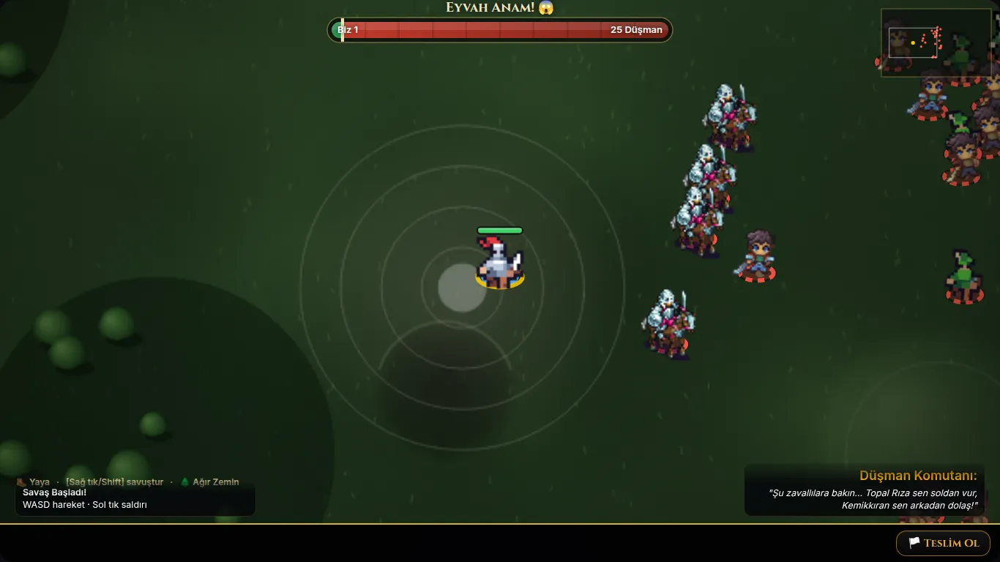
      <figcaption><h3>Savaş</h3><ul>
        <li>Her askerin tek bir karesi var, hareket kayarak ve zıplayarak yapılıyor.</li>
        <li>Oyuncu ilk gün parlak zırhlı bir şövalye olarak görünüyor. Senin itirazın, haklı.</li>
        <li>Süvariler yayalardan üç kat detaylı. Aynı sahnede iki farklı oyundan gelmiş gibi duruyorlar.</li>
      </ul></figcaption></figure>
    <figure class="shot">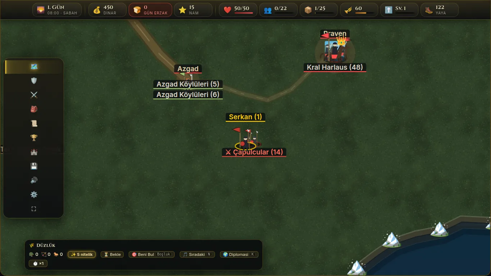
      <figcaption><h3>Harita</h3><ul>
        <li>Çimen dokusu düz, arazi okunmuyor. Yükselti ve yol hissi yok.</li>
        <li>Etiketler üst üste biniyor (iki "Azgad Köylüleri", Praven'in üstünde kral).</li>
        <li>Haritadaki sol menü sadece ikon. Emoji ikonlar ne olduklarını söylemiyor.</li>
      </ul></figcaption></figure>
    <figure class="shot">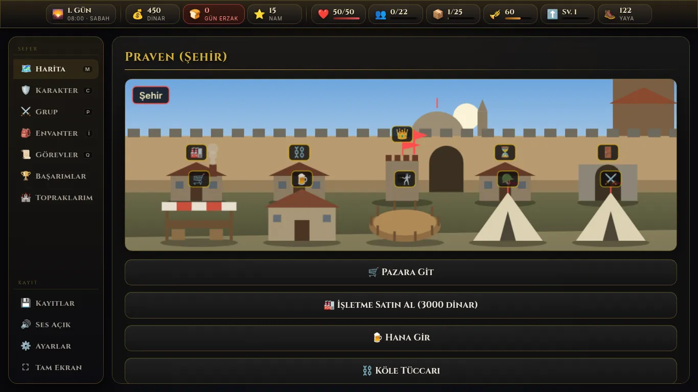
      <figcaption><h3>Şehir</h3><ul>
        <li>Sahne iyi bir fikir. Emoji işaretçiler ve düz gökyüzü onu oyuncak gibi gösteriyor.</li>
        <li>Eylemler tam genişlikte buton listesi. Göz taramıyor, maliyet ve durum görünmüyor.</li>
      </ul></figcaption></figure>
    <figure class="shot">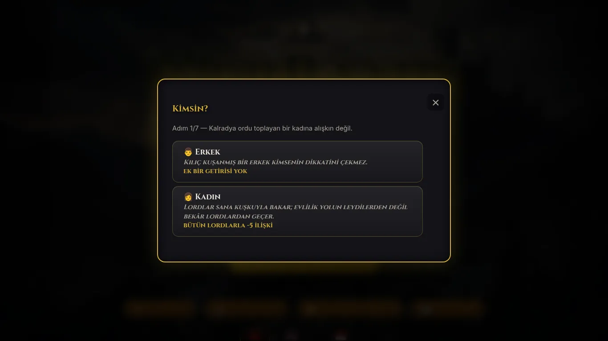
      <figcaption><h3>Karakter oluşturma</h3><ul>
        <li>Açıklamalar italik ve küçük-büyük harfli Cinzel ile yazılmış, okumak zor.</li>
        <li>İlerleme sadece "Adım 1/7" yazısı. Etkiler (−5 ilişki) sıradan metin gibi duruyor.</li>
      </ul></figcaption></figure>
    <figure class="shot">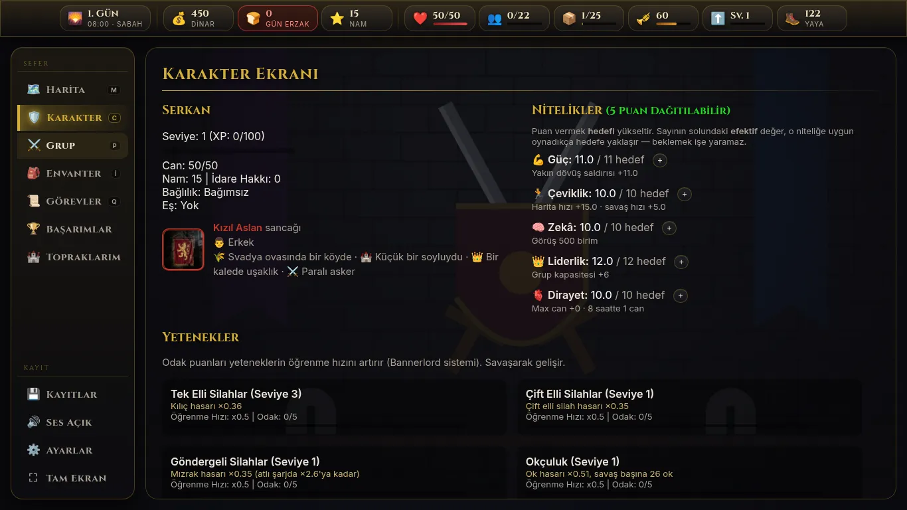
      <figcaption><h3>Karakter ve grup ekranları</h3><ul>
        <li>Bilgi yoğun ama hiyerarşi zayıf. Başlık, değer ve açıklama aynı ağırlıkta.</li>
        <li>Boş durumlar düz metin ("Grubunda hiç asker yok."). Oyuncuya ne yapacağını söylemiyor.</li>
      </ul></figcaption></figure>
    <figure class="shot">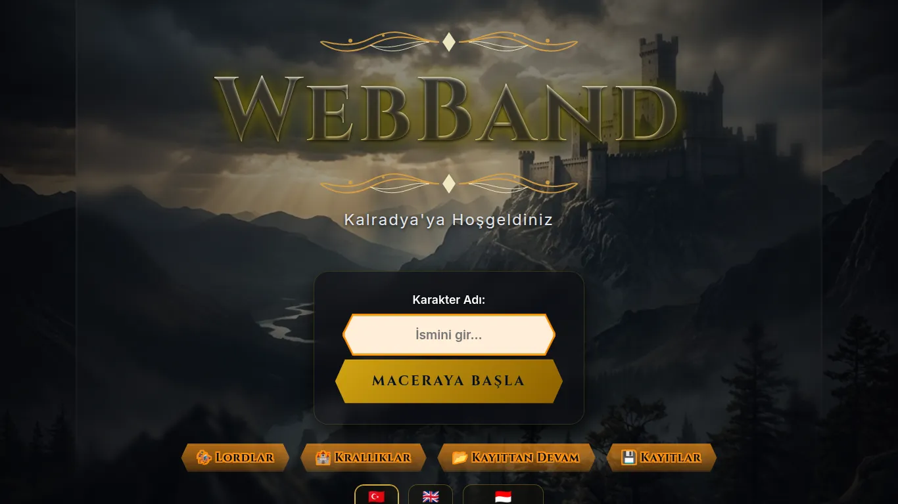
      <figcaption><h3>Başlangıç</h3><ul>
        <li>Atmosfer güçlü, en iyi ekran bu. Logonun parıltısı bulanık kalıyor.</li>
        <li>Alttaki turuncu degrade butonlar, üstteki altın panelle aynı aileden değil.</li>
      </ul></figcaption></figure>
  </div>
</section>

<section id="paketler">
  <div class="sec-head">
    <span class="eyebrow">2 · Gönderdiğin paketler</span>
    <h2>İşimi görürler mi? Biri tam isabet, diğeri kısmen.</h2>
    <p>İki zip'i de açtım, her sprite sheet'e tek tek baktım. Oyunda bugün bu paketlerden sadece <b>her seviyenin tek bir bekleme karesi</b> kullanılıyor. Paketlerin asıl değeri kullanılmayan kısımda.</p>
  </div>
  <div class="grid2">
    <div class="card">
      <h3>Swordsman 1–3 <span class="v yes">Tam isabet</span></h3>
      <p>Üç seviyeli bir kılıç ustası. Her seviyede 8 animasyon ve 4 yön var. Asıl önemlisi <b>katmanlı</b> gelmesi: gövde, kafa ve kılıç ayrı dosyalar. Bu sayede zırhı bir seviyeden, silahı başka bir seviyeden alabiliyorum. Oyuncunun ekipmanına göre görünmesi bununla mümkün.</p>
      <div class="facts">
        <span>Bekleme <b>12</b> kare</span><span>Yürüme <b>6</b></span><span>Koşu <b>8</b></span><span>Saldırı <b>8</b></span>
        <span>Yürürken / koşarken saldırı <b>6 / 8</b></span><span>Hasar <b>5</b></span><span>Ölüm <b>7</b></span><span>Yön <b>4</b></span><span>Kare <b>64×64</b></span>
      </div>
      <p>Tek eksik: 3. seviyenin hasar animasyonu katmanlı gelmiyor. PoC'de onu bekleme karesinden kodla ürettim: geri sekme ve kırmızı flaş. Böylece miğfer ve silah seçimi hasar anında da korunuyor.</p>
    </div>
    <div class="card">
      <h3>Top-Down Roguelike Kit <span class="v part">Kısmen</span></h3>
      <p>Üç kahraman, dört zindan canavarı, efektler, bir arayüz seti ve bir zindan tileset'i. 32×32 ızgara, kalın dış çizgi, daha kısa oranlar. Swordsman'dan belirgin şekilde farklı bir üslup.</p>
      <div class="facts">
        <span>Kahraman <b>3</b></span><span>Canavar <b>4</b></span><span>Yön <b>3</b> (sol = aynalanmış sağ)</span><span>Bekleme / Yürüme / Saldırı / Hasar / Ölüm <b>4 / 6 / 4 / 2 / 8</b></span>
      </div>
      <p>Okçu ve efektler kullanılır. Gerisi temaya ya da üsluba uymuyor, aşağıdaki tabloda tek tek yazdım.</p>
    </div>
  </div>
  <div class="tbl" style="margin-top:18px">
    <table>
      <thead><tr><th>Parça</th><th>Karar</th><th>Neden</th></tr></thead>
      <tbody>
        <tr><td>Swordsman seviye 1</td><td><span class="v yes">Kullan</span></td><td>Paçavralı, sopalı köylü. Oyuncunun ilk günü ve köylü milisler için birebir.</td></tr>
        <tr><td>Swordsman seviye 2</td><td><span class="v yes">Kullan</span></td><td>Deri yelek, basit kılıç. Deri zırh giyen oyuncu ve acemi piyade.</td></tr>
        <tr><td>Swordsman seviye 3</td><td><span class="v yes">Kullan</span></td><td>Pelerinli, çelik kılıçlı er. Zincir zırh ve üstü.</td></tr>
        <tr><td>Okçu (yeşil kukuleta)</td><td><span class="v yes">Kullan</span></td><td>Zaten oyunda, artık animasyonlu olur. Üslup farkı küçük ölçekte göze batmıyor (5. bölümde görebilirsin).</td></tr>
        <tr><td>Şövalye</td><td><span class="v no">Oyuncudan kaldır</span></td><td>Oyuncunun ilk gün şövalye görünmesi mantıksız. Ayrıca üslubu Swordsman'la uyuşmuyor. En fazla ileride bir boss ya da kraliyet muhafızı olabilir.</td></tr>
        <tr><td>Büyücü</td><td><span class="v no">Kullanma</span></td><td>Oyunda büyü yok.</td></tr>
        <tr><td>Goblin ×3, fare</td><td><span class="v no">Kullanma</span></td><td>Kalradya'da goblin yok. Fare, hayvan çeteleri için bile fazla küçük.</td></tr>
        <tr><td>Kan efekti, ok, gölge</td><td><span class="v yes">Kullan</span></td><td>Pixel kan sıçraması bugünkü yuvarlak lekelerden çok daha iyi okunuyor.</td></tr>
        <tr><td>Arayüz seti</td><td><span class="v no">Kullanma</span></td><td>Pastel mavi ve pembe zindan panelleri. Oyunun koyu-altın temasıyla çatışıyor. 10×10 ikonlar da çok küçük.</td></tr>
        <tr><td>Zindan tileset</td><td><span class="v part">Belki ileride</span></td><td>Açık arazi savaşı için değil. Kuşatmada kale içi sahnesi yapılırsa işe yarar.</td></tr>
        <tr><td>Süvari / at</td><td><span class="v no">Pakette yok</span></td><td>İki pakette de at yok. Bugünkü süvariler Wesnoth'tan (GPL) ve üslubu çok farklı. 5. bölümde kodla çizdiğim bir atla deneme var.</td></tr>
      </tbody>
    </table>
  </div>
  <div class="lineup" style="margin-top:18px" aria-label="Bugün oyundaki sprite'lar ile yeni sprite aynı piksel ölçeğinde">
    <figure>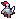<figcaption>Bugün: oyuncu (şövalye)</figcaption></figure>
    <figure>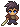<figcaption>Bugün: piyade</figcaption></figure>
    <figure>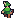<figcaption>Bugün: okçu</figcaption></figure>
    <figure>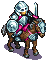<figcaption>Bugün: süvari (Wesnoth)</figcaption></figure>
    <figure><canvas id="lineupNew" width="40" height="40" style="width:120px;height:120px"></canvas><figcaption>Yeni: köylü oyuncu, 4 yön döner</figcaption></figure>
  </div>
  <p class="muted" style="margin-top:8px;font-size:.85rem">Hepsi aynı piksel büyütmesinde (3×). Süvarinin diğerlerinden ne kadar ayrıştığı burada açıkça görünüyor.</p>
</section>

<section id="yon">
  <div class="sec-head">
    <span class="eyebrow">3 · Sanat yönü</span>
    <h2>Tek bir ana dil seçelim</h2>
    <p>Üç seçenek hazırladım. Önerim A. Pixel art oyunun <b>dünyası</b> olur, arayüz ise okunaklı ve keskin kalır. Görev metinleri ve diyaloglar uzun. Pixel fontla okumak yorucu olur, çevirilerde de satırlar taşar.</p>
  </div>
  <div class="grid3">
    <article class="card dir pick">
      <span class="v yes tag">Önerim</span>
      <h3>A · Pixel dünya, sade arayüz</h3>
      <div class="prev"><div class="prevA g">
        <canvas id="prevA" width="32" height="32"></canvas>
        <div class="chipA">
          <div><svg class="i"><use href="#i-coin"/></svg>450 <small>dinar</small></div>
          <div><svg class="i"><use href="#i-men"/></svg>12/22 <small>asker</small></div>
        </div>
      </div></div>
      <ul><li>Savaş, harita nesneleri, şehir sahnesi ve eşya ikonları pixel olur.</li><li>Paneller, yazılar ve butonlar koyu-altın kalır, emoji yerine çizgi ikonlar gelir.</li><li>Mobilde metin net kalır, çeviri riski yok.</li></ul>
    </article>
    <article class="card dir">
      <h3>B · Her şey pixel</h3>
      <div class="prev"><div class="pxbox">KERVAN YOLDA<div>Dinar <span>450</span> · Asker <span>12</span></div></div></div>
      <ul><li>Çerçeveler, butonlar ve sayılar da pixel olur.</li><li>En tutarlı ve en retro seçenek bu.</li><li>Uzun metinler pixel fontta yorar. TR/EN/ID'de taşma testleri çoğalır.</li></ul>
    </article>
    <article class="card dir">
      <h3>C · Bugünkü stil + cila</h3>
      <div class="prev prevC"></div>
      <ul><li>Pixel sadece savaşta kalır. Harita ve şehir vektör olarak cilalanır.</li><li>En az iş gerektiren seçenek bu.</li><li>"Dört dil" sorunu yarım çözülür.</li></ul>
    </article>
  </div>
</section>

<section id="oyuncu">
  <div class="sec-head">
    <span class="eyebrow">4 · PoC · Oyuncunun gelişimi</span>
    <h2>Kuşandığın gibi görünürsün</h2>
    <p>Senin önerin buydu: oyuncu da askerler gibi 1–3 seviyeden geçsin. Ben bir adım ileri götürdüm. Seviye yerine <b>kuşanılan ekipman</b> görünüşü belirliyor, çünkü oyunda zaten Deri Zırh, Zincir Zırh ve Burunluklu Miğfer gibi eşyalar var. Aşağıdaki her şey canlı, dene.</p>
  </div>
  <div class="bench">
    <div class="stack">
      <div class="stage">
        <canvas id="stage" width="96" height="72"></canvas>
        <div class="now" id="stageNow">Köylü</div>
        <div class="strip" id="strip" aria-label="Animasyonun bütün kareleri"></div>
      </div>
      <div class="compare">
        <canvas id="oldKnight" width="32" height="32"></canvas>
        <p><b style="color:var(--ink)">Bugün oyunda:</b> ne giyersen giy, yaya oyuncu hep bu şövalye. Tek kare, animasyon yok.</p>
      </div>
    </div>
    <div class="ctrls">
      <div class="ctl"><span class="lbl">Hazır kombinasyonlar</span>
        <div class="presets">
          <button data-preset="0">Yeni oyun<small>paçavra, sopa, başı açık</small></button>
          <button data-preset="1">20. gün<small>deri zırh, kılıç, deri başlık</small></button>
          <button data-preset="2">Vasal lord<small>zincir, çelik kılıç, burunluklu</small></button>
          <button data-preset="3">Kral muhafızı<small>zincir, çelik, büyük miğfer</small></button>
        </div>
      </div>
      <div class="ctl"><span class="lbl">Animasyon</span><div class="seg" id="c-anim"></div></div>
      <div class="ctl"><span class="lbl">Yön</span><div class="seg" id="c-dir"></div></div>
      <div class="ctl"><span class="lbl">Zırh</span><div class="seg" id="c-armor"></div></div>
      <div class="ctl"><span class="lbl">Silah</span><div class="seg" id="c-weapon"></div></div>
      <div class="ctl"><span class="lbl">Miğfer (elle çizildi)</span><div class="seg" id="c-helm"></div></div>
      <div class="ctl"><span class="lbl">Sancak rengi</span><div class="seg" id="c-cloth"></div></div>
      <div class="ctl"><span class="lbl">Saç</span><div class="seg" id="c-hair"></div></div>
      <div class="ctl"><span class="lbl">Ten</span><div class="seg" id="c-skin"></div></div>
    </div>
  </div>
  <div class="notes" style="margin-top:18px">
    <div class="rule"><b>Önerdiğim kural</b>Zırh gövdeyi, silah kılıcı, miğfer başı belirler. Oyun başında paçavra, sopa ve açık baş. Zincir ve plaka zırh şimdilik aynı görünüyor. Plakaya omuzluk ve göğüs katmanını Tur 2'de çizerim.</div>
    <div class="note"><b>Miğferler nasıl yapıldı</b>Pakette miğfer yok. Her miğferi yön başına bir kez elle, piksel piksel çizdim: ön, arka ve yan (diğer yan aynalanıyor). Her karede kafanın ne kadar kaydığını referans kafayla eşleştirerek buluyorum ve aynı çizimi oraya koyuyorum. Miğferin şekli hiçbir karede değişmiyor, bu yüzden titreme yok. Yere düşen kafada çizim kafayla birlikte dönüyor. Kırmızı hasar flaşını da giyilen her şeyin üstüne kendim uyguluyorum.</div>
    <div class="note"><b>Balta ve topuz</b>Pakette sadece kılıç var. Balta ve topuz kafasını kılıç katmanının ucuna kodla çizmek mümkün. Bunu Tur 2'de denerim.</div>
  </div>
</section>

<section id="savas">
  <div class="sec-head">
    <span class="eyebrow">5 · PoC · Savaş</span>
    <h2>Bugünkü yöntem ile yeni yöntem, aynı sahnede</h2>
    <p>Beşe beş küçük bir çarpışma, her tarafta bir okçu ve bir süvari. Soldakiler Nord, sağdakiler Svadya. Her askerin zırhı, saçı ve teni rastgele. <b>"Bugünkü gibi"</b> modu oyundaki yöntemi taklit ediyor: tek kare ve zıplama. <b>"Yeni"</b> modunda gerçek animasyon kareleri, 4 yön ve ölüm animasyonu var. Vuruş flaşı ve kan gibi efektler oyunda zaten var, burada iki modda da aynı çalışıyor. Sahneye tıklarsan yeniden başlar.</p>
  </div>
  <div class="arena">
    <canvas id="arena" width="320" height="150" title="Yeniden başlatmak için tıkla"></canvas>
    <div class="arena-bar">
      <div class="seg" id="b-mode">
        <button data-v="old" aria-pressed="false">Bugünkü gibi</button>
        <button data-v="new" aria-pressed="true">Yeni</button>
      </div>
      <div class="toggles" id="b-opts">
        <label><input type="checkbox" data-k="colors" checked>Sancak renkleri</label>
        <label><input type="checkbox" data-k="variety" checked>Saç / ten çeşidi</label>
        <label><input type="checkbox" data-k="rings">Zemin halkası</label>
        <label><input type="checkbox" data-k="hitstop" checked>Vuruş donması</label>
        <label><input type="checkbox" data-k="numbers" checked>Hasar sayısı</label>
        <label><input type="checkbox" data-k="blood" checked>Kan ve ceset</label>
        <label><input type="checkbox" data-k="archers" checked>Okçular</label>
        <label><input type="checkbox" data-k="cavalry" checked>Süvariler</label>
        <label><input type="checkbox" data-k="slow">Yavaş çekim</label>
      </div>
    </div>
  </div>
  <div class="notes" style="margin-top:18px">
    <div class="note"><b>Takım ayrımı</b>Bugün takımları sadece zemindeki renkli halka ayırıyor. Burada kıyafet sancak renginde, halka isteğe bağlı. Kalabalıkta hangi askerin kimden olduğu bir bakışta anlaşılıyor.</div>
    <div class="note"><b>Aynı yüz, farklı insanlar</b>Paketteki herkes aynı saçla geliyor. Beş saç ve dört ten rengiyle, sahnede birbirinin kopyası iki asker neredeyse hiç kalmıyor.</div>
    <div class="note"><b>Performans</b>Renklendirme her sprite sheet için savaş başında bir kez yapılır ve önbelleğe alınır. Çizim sırasında asker başına 3–5 <code>drawImage</code> çağrısı düşer. CLAUDE.md'deki "bir kez pişir" kuralına uyuyor. PixiJS tarafında aynı sayfalar doku olarak yüklenir.</div>
    <div class="note"><b>Süvari</b>İki pakette de at yok. Yeni moddaki atı ben çizdim: pakete uyan pixel üslupta, sekiz karelik dörtnala (her bacak kendi adım döngüsünde, gerçek dörtnala sırasıyla), sancak renginde eyer örtüsü ve üç don (doru, kır, yağız). Üstünde Swordsman binici oturuyor, saldırısı binicinin kendi animasyonu. Binici düşünce at kendi saflarına kaçıyor. Bir sınırı var: at sadece sağa ve sola bakıyor, yukarı ya da aşağı giderken de yandan görünüyor. Bugünkü modda oyundaki Wesnoth süvarisi var.</div>
    <div class="note"><b>Okçu üslubu</b>Roguelike okçusu daha kalın çizgili ve daha kısa. Bu boyutta fark az göze batıyor. Yine de istersen okçuyu Swordsman gövdesinden kendim türetebilirim: kılıç yerine yay çizmek gerekiyor.</div>
  </div>
</section>

<section id="arayuz">
  <div class="sec-head">
    <span class="eyebrow">6 · Arayüz mock'ları</span>
    <h2>Aynı bilgi, daha kolay taranır</h2>
    <p>Üç ekranı A yönüne göre yeniden kurdum. Veriler bugünkü ekran görüntüleriyle aynı. Bunlar gerçek HTML ve CSS, oyuna aynı sınıflarla taşınabilir. Emoji yerine tek elden çizilmiş bir ikon seti kullandım, her platformda aynı görünür.</p>
  </div>

  <div class="stack" style="gap:34px">
    <div class="mock-pair">
      <h3>6a · Üst bar</h3>
      <div class="mock-label">Bugün</div>
      <div class="crop hud">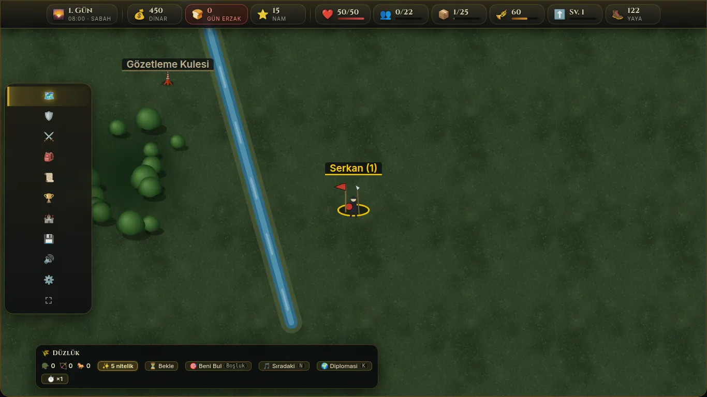</div>
      <div class="mock-label new">Önerilen</div>
      <div class="hudm g" role="group" aria-label="Önerilen üst bar">
        <div class="hgrp">
          <div class="hc"><svg class="daydial" viewBox="0 0 30 30"><circle cx="15" cy="15" r="12" fill="none" stroke="rgba(255,255,255,.1)" stroke-width="3"/><circle cx="15" cy="15" r="12" fill="none" stroke="#f5d76e" stroke-width="3" stroke-dasharray="25 100" transform="rotate(-90 15 15)" stroke-linecap="round"/><use href="#i-sun" x="7" y="7" width="16" height="16" style="stroke:#d4af37;fill:none;stroke-width:1.8"/></svg><div><div class="n">1. Gün</div><div class="k">08:00 · sabah</div></div></div>
        </div>
        <div class="hgrp">
          <div class="hc"><svg class="i"><use href="#i-coin"/></svg><div><div class="n">450</div><div class="k">dinar</div></div></div>
          <div class="hc warn" title="Erzak bitti: moral her gün düşer"><svg class="i"><use href="#i-bread"/></svg><div><div class="n">0 <small>gün</small></div><div class="k">erzak bitti</div></div></div>
        </div>
        <div class="hgrp">
          <div class="hc"><svg class="i"><use href="#i-men"/></svg><div><div class="n">0<small>/22</small></div><div class="bar"><i style="width:2%;background:var(--blue)"></i></div></div></div>
          <div class="hc"><svg class="i"><use href="#i-horn"/></svg><div><div class="n">60</div><div class="bar"><i style="width:60%;background:var(--amber)"></i></div></div></div>
          <div class="hc"><svg class="i"><use href="#i-sack"/></svg><div><div class="n">1<small>/25</small></div><div class="bar"><i style="width:4%;background:#9e9789"></i></div></div></div>
        </div>
        <div class="hgrp">
          <div class="hc"><svg class="i" style="color:var(--red)"><use href="#i-heart"/></svg><div><div class="n">50<small>/50</small></div><div class="bar"><i style="width:100%;background:var(--red)"></i></div></div></div>
          <div class="hc"><svg class="i"><use href="#i-up"/></svg><div><div class="n">Sv. 1</div><div class="bar"><i style="width:8%;background:var(--gold)"></i></div></div></div>
          <div class="hc"><svg class="i"><use href="#i-star"/></svg><div><div class="n">15</div><div class="k">nam</div></div></div>
          <div class="hc"><svg class="i"><use href="#i-boot"/></svg><div><div class="n">122</div><div class="k">yaya</div></div></div>
        </div>
      </div>
      <p class="muted" style="font-size:.88rem">On bir eşit çip yerine dört grup var: zaman, ekonomi, ordu, kahraman. Barı olan değerlerde etiket yok, bar anlamı taşıyor. Sadece dikkat isteyen değer (erzak bitti) renk ve nabızla öne çıkıyor.</p>
    </div>

    <div class="mock-pair">
      <h3>6b · Şehir ekranı</h3>
      <div class="mock-label">Bugün</div>
      <div class="crop town"></div>
      <div class="mock-label new">Önerilen</div>
      <div class="townm g">
        <div class="scene">
          <div class="title"><h3>Praven</h3><div><span><i></i>Svadya · başkent</span><span>Refah: iyi</span><span>Kral Harlaus kalede</span></div></div>
        </div>
        <div class="tgroups">
          <div class="tg"><h4>Ticaret</h4><div class="tcards">
            <button class="tcard"><span class="ic"><svg class="i"><use href="#i-stall"/></svg></span><span><b>Pazar</b><span>Erzak, silah ve zırh al-sat</span></span><kbd>P</kbd></button>
            <button class="tcard lock"><span class="ic"><svg class="i"><use href="#i-anvil"/></svg></span><span><b>İşletme satın al</b><span>Boyahane, bira evi, değirmen</span></span><span class="mt">3000</span></button>
            <button class="tcard"><span class="ic"><svg class="i"><use href="#i-chain"/></svg></span><span><b>Köle tüccarı</b><span>Esirlerini sat</span></span><span class="mt">0 esir</span></button>
          </div></div>
          <div class="tg"><h4>Mekânlar</h4><div class="tcards">
            <button class="tcard"><span class="ic"><svg class="i"><use href="#i-mug"/></svg></span><span><b>Han</b><span>Paralı asker, yoldaş, söylenti</span></span><kbd>H</kbd></button>
            <button class="tcard"><span class="ic"><svg class="i"><use href="#i-swords"/></svg></span><span><b>Arena</b><span>Talim dövüşü ve turnuva</span></span><kbd>A</kbd></button>
            <button class="tcard"><span class="ic"><svg class="i"><use href="#i-crown"/></svg></span><span><b>Kale</b><span>Kral Harlaus ile görüş</span></span><kbd>K</kbd></button>
          </div></div>
          <div class="tg"><h4>Kamp</h4><div class="tcards">
            <button class="tcard"><span class="ic"><svg class="i"><use href="#i-glass"/></svg></span><span><b>Bekle</b><span>Saat geçir, yaralılar iyileşir</span></span><kbd>B</kbd></button>
            <button class="tcard"><span class="ic"><svg class="i"><use href="#i-door"/></svg></span><span><b>Şehirden ayrıl</b><span>Haritaya dön</span></span><kbd>Esc</kbd></button>
          </div></div>
        </div>
      </div>
      <p class="muted" style="font-size:.88rem">Eylemler üç gruba ayrıldı ve kart oldu. Her kartta tek satırlık açıklama ve sağda durum (fiyat, esir sayısı ya da kısayol) var. Parası yetmeyen eylem soluk ve fiyatı kırmızı. Sahne üstte başlık görevi görüyor. Şehir sahnesinin kendisi A yönünde pixel'e dönecek, bu Tur 3'ün işi.</p>
    </div>

    <div class="mock-pair">
      <h3>6c · Karakter oluşturma</h3>
      <div class="grid2" style="align-items:start">
        <div class="stack" style="gap:10px"><div class="mock-label">Bugün</div><div class="crop create"></div></div>
        <div class="stack" style="gap:10px"><div class="mock-label new">Önerilen</div>
          <div class="createm g">
            <div class="steps" aria-label="Adım 1 / 7"><i class="cur"></i><i></i><i></i><i></i><i></i><i></i><i></i></div>
            <div class="hd"><h3>Kimsin?</h3><span>Adım 1 / 7</span></div>
            <p class="hint">Kalradya ordu toplayan bir kadına alışkın değil.</p>
            <button class="opt sel"><canvas id="avM" width="24" height="24"></canvas><span><b>Erkek</b><p>Kılıç kuşanmış bir erkek kimsenin dikkatini çekmez.</p><span class="fx"><span>Ek getirisi yok</span></span></span></button>
            <button class="opt"><canvas id="avF" width="24" height="24"></canvas><span><b>Kadın</b><p>Lordlar sana kuşkuyla bakar. Evlilik yolun leydilerden değil, bekâr lordlardan geçer.</p><span class="fx"><span class="neg">Bütün lordlarla −5 ilişki</span></span></span></button>
          </div>
        </div>
      </div>
      <p class="muted" style="font-size:.88rem">Açıklamalar düz Inter ile yazıldı, italik küçük-büyük harf kalktı. Yedi adım üstte çubuk olarak görünüyor. Etkiler renkli etiket oldu: kırmızı olumsuz, yeşil olumlu. Portre yerine oyuncunun kendi sprite'ı duruyor, seçimler ilerledikçe değişebilir. Kadın gövdesi pakette yok, burada yer tutucu var. Kadın karakter için ayrı sprite gerekiyor, bu açık bir soru.</p>
    </div>
  </div>
</section>

<section id="telefon">
  <div class="sec-head">
    <span class="eyebrow">7 · Telefonda</span>
    <h2>Telefon ayrı bir ekran, küçültülmüş masaüstü değil</h2>
    <p>Oyunun büyük kısmı telefonda oynanıyor ve en belirgin farklar savaşta, şehirde ve haritada. Her telefonun üstündeki düğmeyle bugünkü hâli (bu oturumda Pixel 7 boyutunda aldığım ekran görüntüsü) ile önerilen hâli arasında geçiş yapabilirsin. Önerilen savaş ekranında dikey sahada gerçek bir mini savaş dönüyor.</p>
  </div>
  <div class="phones">
    <div class="pcol">
      <h3>Savaş</h3>
      <div class="seg" data-phone="pb"><button type="button" data-v="now" aria-pressed="false">Bugün</button><button type="button" data-v="new" aria-pressed="true">Önerilen</button></div>
      <div class="phone"><div class="scr" id="pb">
        <div class="view" data-v="now" hidden>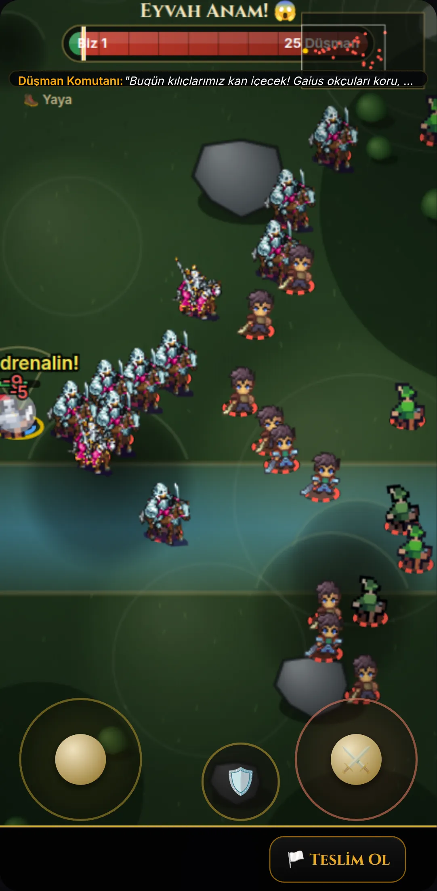</div>
        <div class="view" data-v="new">
          <canvas id="pbattle" width="144" height="300"></canvas>
          <div class="pb-top">
            <div class="pb-row"><span class="pb-menu" title="Duraklat, teslim ol">II</span><div class="pb-tug"><i class="us" id="pbUs" style="width:50%"></i><i class="them"></i><b id="pbUsN">Biz 6</b><b id="pbThemN">6 Düşman</b></div><span class="pb-mini" id="pbMini"></span></div>
            <div class="pb-toast"><b>Düşman komutanı:</b> Kılıçlarımız bugün kan içecek!</div>
          </div>
          <div class="pb-hp"><svg class="i" style="color:var(--red)"><use href="#i-heart"/></svg>36/50<i></i></div>
          <div class="pb-ctl">
            <div class="pb-cmds"><span>Takip</span><span class="on">Hücum</span><span>Mevzi</span></div>
            <div class="pb-stick"></div>
            <div class="pb-blk"><svg class="i"><use href="#i-shield"/></svg></div>
            <div class="pb-atk"><svg class="i"><use href="#i-sword"/></svg></div>
          </div>
        </div>
      </div></div>
      <ul>
        <li>Alttaki siyah "Teslim Ol" şeridi kalktı. Teslim olma, sol üstteki duraklat menüsüne taşındı. Ekranın altındaki yaklaşık %7'lik boş şerit sahaya katıldı.</li>
        <li>Güç barı ince tek satır oldu. Mini harita artık onun üstüne binmiyor.</li>
        <li>Komutanın sözü birkaç saniye görünüp kayboluyor, kalıcı olarak yer kaplamıyor.</li>
        <li>Çubuklar yarı saydam oldu, ordu emirleri başparmağın yanında duruyor.</li>
      </ul>
    </div>
    <div class="pcol">
      <h3>Şehir</h3>
      <div class="seg" data-phone="pt"><button type="button" data-v="now" aria-pressed="false">Bugün</button><button type="button" data-v="new" aria-pressed="true">Önerilen</button></div>
      <div class="phone"><div class="scr" id="pt">
        <div class="view" data-v="now" hidden>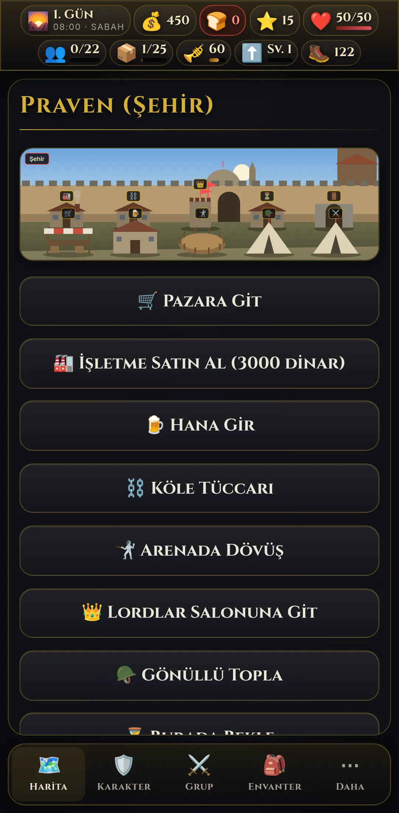</div>
        <div class="view g" data-v="new">
          <div class="ph-hud"><span class="c"><svg class="i"><use href="#i-sun"/></svg>1. Gün <small>08:00</small></span><span class="c"><svg class="i"><use href="#i-coin"/></svg>450</span><span class="c warn"><svg class="i"><use href="#i-bread"/></svg>0 <small>gün</small></span><span class="c"><svg class="i"><use href="#i-men"/></svg>0<small>/22</small></span><span class="more">⌄</span></div>
          <div class="pt-body">
            <div class="pt-scene"><div><h4>Praven</h4><p><i></i>Svadya başkenti · Kral Harlaus kalede</p></div></div>
            <div class="pt-grp"><h5>Ticaret ve mekânlar</h5><div class="pt-tiles">
              <div class="pt-tile"><span class="ic"><svg class="i"><use href="#i-stall"/></svg></span><span><b>Pazar</b><span>Al-sat</span></span></div>
              <div class="pt-tile"><span class="ic"><svg class="i"><use href="#i-mug"/></svg></span><span><b>Han</b><span>Asker, yoldaş</span></span></div>
              <div class="pt-tile"><span class="ic"><svg class="i"><use href="#i-swords"/></svg></span><span><b>Arena</b><span>Talim, turnuva</span></span></div>
              <div class="pt-tile"><span class="ic"><svg class="i"><use href="#i-crown"/></svg></span><span><b>Kale</b><span>Kral burada</span></span></div>
              <div class="pt-tile"><span class="ic"><svg class="i"><use href="#i-helm"/></svg></span><span><b>Gönüllü topla</b><span>6 gönüllü</span></span></div>
              <div class="pt-tile"><span class="ic"><svg class="i"><use href="#i-glass"/></svg></span><span><b>Bekle</b><span>Yaralılar iyileşir</span></span></div>
              <div class="pt-tile lock"><span class="ic"><svg class="i"><use href="#i-anvil"/></svg></span><span><b>İşletme</b><span>3000 dinar</span></span></div>
              <div class="pt-tile"><span class="ic"><svg class="i"><use href="#i-chain"/></svg></span><span><b>Köle tüccarı</b><span>0 esir</span></span></div>
            </div></div>
            <div class="pt-leave">Şehirden ayrıl</div>
          </div>
          <div class="ph-nav"><span class="on"><svg class="i"><use href="#i-map"/></svg>Harita</span><span><svg class="i"><use href="#i-shield"/></svg>Karakter</span><span><svg class="i"><use href="#i-swords"/></svg>Grup</span><span><svg class="i"><use href="#i-sack"/></svg>Envanter</span><span><svg class="i"><use href="#i-dots"/></svg>Daha</span></div>
        </div>
      </div></div>
      <ul>
        <li>Dokuz eylemin hepsi ilk ekrana sığıyor. Bugün yedisi sığıyor, gerisi için kaydırmak gerekiyor, üstelik gönüllü toplama ve bekleme en altta.</li>
        <li>İki sütunlu kutucuklar başparmakla rahat seçiliyor, durum bilgisi de kutucuğun içinde.</li>
        <li>Üst bar tek satıra indi. En önemli dört değer görünüyor, gerisi "⌄" ile açılıyor.</li>
      </ul>
    </div>
    <div class="pcol">
      <h3>Harita</h3>
      <div class="seg" data-phone="pm"><button type="button" data-v="now" aria-pressed="false">Bugün</button><button type="button" data-v="new" aria-pressed="true">Önerilen</button></div>
      <div class="phone"><div class="scr" id="pm">
        <div class="view" data-v="now" hidden>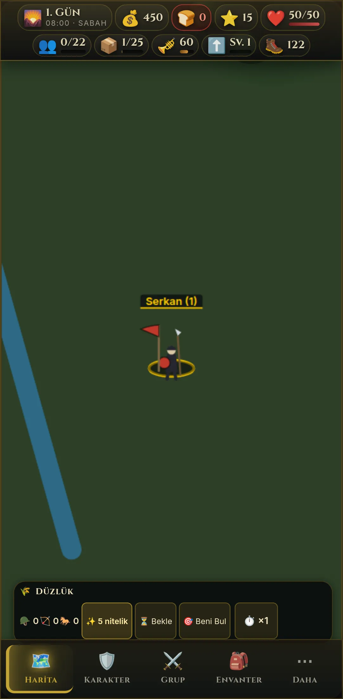</div>
        <div class="view g" data-v="new">
          <canvas id="pmap" width="144" height="300"></canvas>
          <div class="pm-labels" id="pmLabels"></div>
          <div class="ph-hud"><span class="c"><svg class="i"><use href="#i-sun"/></svg>1. Gün <small>08:00</small></span><span class="c"><svg class="i"><use href="#i-coin"/></svg>450</span><span class="c warn"><svg class="i"><use href="#i-bread"/></svg>0 <small>gün</small></span><span class="c"><svg class="i"><use href="#i-men"/></svg>0<small>/22</small></span><span class="more">⌄</span></div>
          <div class="pm-bar"><span class="t">Düzlük<small>5 nitelik puanı</small></span><span class="b"><span title="Bekle"><svg class="i" style="width:4.6cqw;height:4.6cqw"><use href="#i-glass"/></svg></span><span title="Beni bul"><svg class="i" style="width:4.6cqw;height:4.6cqw"><use href="#i-target"/></svg></span><span title="Diplomasi"><svg class="i" style="width:4.6cqw;height:4.6cqw"><use href="#i-globe"/></svg></span><span title="Hız">×1</span></span></div>
          <div class="ph-nav"><span class="on"><svg class="i"><use href="#i-map"/></svg>Harita</span><span><svg class="i"><use href="#i-shield"/></svg>Karakter</span><span><svg class="i"><use href="#i-swords"/></svg>Grup</span><span><svg class="i"><use href="#i-sack"/></svg>Envanter</span><span><svg class="i"><use href="#i-dots"/></svg>Daha</span></div>
        </div>
      </div></div>
      <ul>
        <li>Arazi paneli iki satırdan tek satırlık bir kapsüle indi. Harita daha çok alan kazanıyor, düğmeler yine başparmak boyunda.</li>
        <li>Etiketler krallık renkli nokta taşıyan küçük kapsüller oldu. Düşman çetesi kırmızı çerçeveyle ayrılıyor.</li>
        <li>Arazinin kendisi (yol, nehir, ağaç, kale) Tur 2'nin işi. Buradaki çizim sadece yön vermek için.</li>
      </ul>
    </div>
  </div>
</section>

<section id="yol">
  <div class="sec-head">
    <span class="eyebrow">8 · Yol haritası</span>
    <h2>Yavaş yavaş, her tur onayla</h2>
    <p>Her tur aynı sırayla ilerler: mock ve PoC hazırlanır, sen onaylarsın, sonra oyuna uygulanır (ayrı branch, testler, sürüm notu). Sıra senin önceliklerine göre değişebilir.</p>
  </div>
  <div class="road">
    <div class="stop cur"><span class="eyebrow">Tur 1 · şimdi</span><h3>Yön ve karakterler</h3><ul><li>Teşhis ve paket değerlendirmesi</li><li>Oyuncu ve piyade animasyonları</li><li>Üst bar, şehir, karakter oluşturma mock'ları</li></ul></div>
    <div class="stop"><span class="eyebrow">Tur 2</span><h3>Savaş alanı ve harita</h3><ul><li>Okçu, süvari ve at çözümü</li><li>Plaka zırh, balta ve topuz çizimleri</li><li>Harita: arazi dokusu, yerleşim ikonları, etiket çakışması, gündüz-gece</li></ul></div>
    <div class="stop"><span class="eyebrow">Tur 3</span><h3>Şehir ve eşyalar</h3><ul><li>Şehir, köy ve kale sahneleri pixel</li><li>Envanter ve eşya ikonları</li><li>Portre çerçeveleri, ana menü</li></ul></div>
    <div class="stop"><span class="eyebrow">Tur 4</span><h3>Cila</h3><ul><li>Ekran geçişleri ve mikro animasyonlar</li><li>Telefon düzeni ve dokunma hedefleri</li><li>Performans ölçümü (<code>framegate.js</code>)</li></ul></div>
  </div>
</section>

<section id="karar">
  <div class="sec-head">
    <span class="eyebrow">9 · Kararların</span>
    <h2>Tur 2'ye geçmeden önce</h2>
    <p>Seçimlerini burada işaretleyip kaydedebilirsin, ben buradan okurum. İstersen sohbete de yazabilirsin. Önerdiğim seçenekler işaretli geliyor.</p>
  </div>
  <form class="form" id="form">
    <fieldset class="q"><legend>1. Sanat yönü</legend>
      <div class="opts">
        <label><input type="radio" name="q1" value="A" checked>A · Pixel dünya, sade arayüz <em>önerim</em></label>
        <label><input type="radio" name="q1" value="B">B · Her şey pixel</label>
        <label><input type="radio" name="q1" value="C">C · Bugünkü stil + cila</label>
      </div></fieldset>
    <fieldset class="q"><legend>2. Oyuncunun görünüşü neye bağlı olsun?</legend>
      <div class="opts">
        <label><input type="radio" name="q2" value="ekipman" checked>Kuşandığı ekipmana <em>önerim</em></label>
        <label><input type="radio" name="q2" value="seviye">Karakter seviyesine</label>
        <label><input type="radio" name="q2" value="sabit">Sabit, hep aynı</label>
      </div></fieldset>
    <fieldset class="q"><legend>3. Şövalye sprite'ı</legend>
      <div class="opts">
        <label><input type="radio" name="q3" value="kaldir" checked>Oyuncudan kaldır <em>önerim</em></label>
        <label><input type="radio" name="q3" value="boss">Boss ya da muhafız olarak kalsın</label>
        <label><input type="radio" name="q3" value="kalsin">Oyuncuda kalsın</label>
      </div></fieldset>
    <fieldset class="q"><legend>4. Takımlar nasıl ayrılsın?</legend>
      <div class="opts">
        <label><input type="radio" name="q4" value="kiyafet" checked>Sancak renginde kıyafet <em>önerim</em></label>
        <label><input type="radio" name="q4" value="ikisi">Kıyafet + zemin halkası</label>
        <label><input type="radio" name="q4" value="halka">Sadece halka (bugünkü gibi)</label>
      </div></fieldset>
    <fieldset class="q"><legend>5. Elle çizilen miğferler</legend>
      <p class="why">Beğenmezsen hazır miğferli bir paket ararız.</p>
      <div class="opts">
        <label><input type="radio" name="q5" value="devam" checked>İyi, bu yolla devam</label>
        <label><input type="radio" name="q5" value="gelistir">Fikir iyi, çizim gelişsin</label>
        <label><input type="radio" name="q5" value="paket">Hazır paket bulalım</label>
      </div></fieldset>
    <fieldset class="q"><legend>6. Arayüz ikonları</legend>
      <div class="opts">
        <label><input type="radio" name="q6" value="svg" checked>Çizgi ikon seti (6. bölümdeki) <em>önerim</em></label>
        <label><input type="radio" name="q6" value="pixel">Pixel ikonlar</label>
        <label><input type="radio" name="q6" value="emoji">Emoji kalsın</label>
      </div></fieldset>
    <fieldset class="q"><legend>7. Tur 2'de önce hangisi?</legend>
      <p class="why">Birden fazla seçebilirsin.</p>
      <div class="opts">
        <label><input type="checkbox" name="q7" value="savas-oyuna" checked>Tur 1'i oyuna uygula (oyuncu + piyade)</label>
        <label><input type="checkbox" name="q7" value="suvari">Okçu ve süvari</label>
        <label><input type="checkbox" name="q7" value="harita">Harita</label>
        <label><input type="checkbox" name="q7" value="arayuz">Arayüz mock'larını oyuna uygula</label>
        <label><input type="checkbox" name="q7" value="sehir">Şehir sahneleri</label>
      </div></fieldset>
    <fieldset class="q"><legend>8. Kadın karakter</legend>
      <p class="why">Swordsman paketinde kadın gövdesi yok.</p>
      <div class="opts">
        <label><input type="radio" name="q8" value="uzun-sac" checked>Aynı gövde, uzun saç ve farklı yüz (kodla)</label>
        <label><input type="radio" name="q8" value="paket">Ayrı bir paket bulalım</label>
        <label><input type="radio" name="q8" value="sonra">Şimdilik önemli değil</label>
      </div></fieldset>
    <fieldset class="q"><legend>9. Süvari</legend>
      <p class="why">5. bölümdeki savaşta iki modu karşılaştırabilirsin.</p>
      <div class="opts">
        <label><input type="radio" name="q9" value="kod-at" checked>Kodla çizilen at + Swordsman binici <em>önerim</em></label>
        <label><input type="radio" name="q9" value="paket">Aynı üslupta hazır bir at paketi bulalım</label>
        <label><input type="radio" name="q9" value="wesnoth">Wesnoth süvarileri kalsın</label>
      </div></fieldset>
    <fieldset class="q"><legend>Notların</legend>
      <textarea id="note" name="note" placeholder="Beğendiğin, beğenmediğin, eklemek istediğin her şey…"></textarea></fieldset>
    <div class="save"><button class="btn" id="saveBtn" type="submit">Kararlarımı kaydet</button><span id="saveState" role="status">Kaydetme bağlantısı kuruluyor…</span></div>
  </form>
</section>

</main>
<footer><div class="wrap">Sprite'lar: CraftPix.net "Free Swordsman 1–3 Level" ve "Free Top-Down Roguelike Game Kit". Miğferler, renklendirme ve sahneler bu sayfanın kodu. Kaynak: <code>docs/design/tur-1/</code>, branch <code>claude/eloquent-allen-pmozyf</code>.</div></footer>

<script src="engine.js"></script>
<script src="horse.js"></script>
<script src="app.js"></script>
